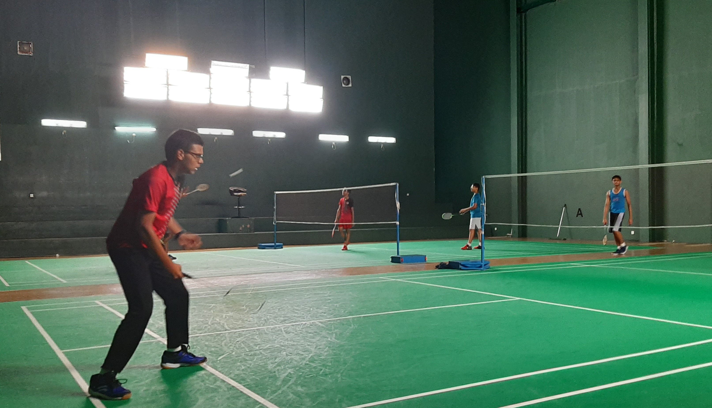

What I like doing in my free time...
This is one of my latest projects, a coin sorting and counting and machine, which as expected sorts and counts coins according to their diameter. I participated in an International competition called IEEE SS12, which was held in Colombo and was able to make it in All Asia's 4th place.
Problem solving and critical thinking is one of my prefered areas where I score well, and creativity booms. My ambition is to go into the field of Mechatronic Engineering, where I have already taken my knowledge to the practical world by creating several projects
Sports
I am very enthustiastic in outdoor activities as well, and take part in several sports including;
- Badminton
- Water Polo
- Football
- Table Tennis

My other interests...
Graphical Designing is one of my preffered favourite areas. As at now I have tried only very few
of my favourite childhood characters. Though they may not be the best of my designs but it was a
satisfying experience from my side. When time permits, I would definitely go for more advanced deisgns.